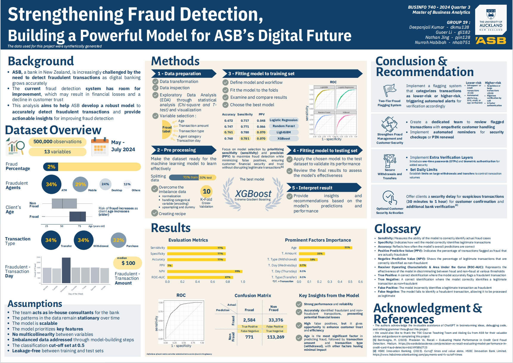

Project 01
Fraud Detection Analytics Project
- Cleaned and preprocessed 500,000+ transaction records, including feature engineering and missing value handling.
- Built an end-to-end data pipeline in R for data preparation, modelling, and evaluation.
- Applied multiple models including Logistic Regression, Random Forest, LightGBM, and XGBoost, and selected the best-performing approach.
- Designed Power BI dashboards to communicate fraud insights and model outputs to stakeholders.
R
Power BI
Machine Learning
Data Pipeline